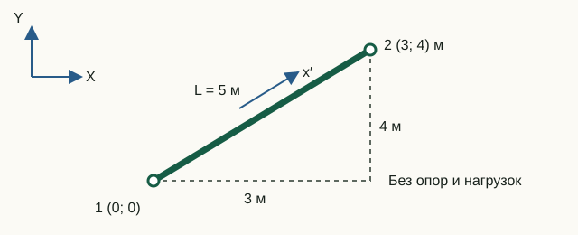

Матрицы жёсткости и масс
У конечного элемента формируются две основные матрицы: матрица жёсткости связывает узловые перемещения с внутренними узловыми усилиями, а матрица масс — узловые ускорения с инерционными силами. До сборки системы обе матрицы можно проверить независимо: по размеру, симметрии, рангу, единицам и поведению при движении как твёрдого тела.
От непрерывного элемента к узловым матрицам
Реальный стержень имеет непрерывное поле перемещений: значение можно определить в любой точке по длине. В конечном элементе это бесконечное число неизвестных заменяется несколькими узловыми степенями свободы qe. Перемещение между узлами не угадывается заново, а восстанавливается заранее выбранными функциями формы:
u(x) = N(x) qe
Именно выбор N(x) задаёт закон распределения перемещений внутри элемента. Матрицы возникают после подстановки этой аппроксимации в выражения для энергии деформации и кинетической энергии:
Ke = ∫V BTDB dV, Me = ∫V ρNTN dV, ε = Bqe
Для двухузлового стержня типа 112 осевое перемещение интерполируется линейно. При ξ = x/L:
u(x) = (1 − ξ)u′1 + ξu′2
Поэтому осевая деформация ε = du/dx постоянна внутри такого элемента. Здесь оператор B содержит первую производную функций формы. Для рамы типа 113 осевое перемещение также линейно, но поперечный прогиб описывается кубическими функциями Эрмита:
v(x) = H1(x)v′1 + H2(x)θ1 + H3(x)v′2 + H4(x)θ2
В изгибной части оператор B содержит уже вторые производные функций H. Поэтому кривизна κ = d²v/dx² и, при постоянном EI, изгибающий момент изменяются по длине линейно.
В текущих элементах E, A, ρ и I считаются постоянными в пределах одного элемента. Линейной для типа 112 является аппроксимация осевого перемещения, а не «все параметры элемента». Матричная форма появляется потому, что непрерывное поле выражено через конечный набор узловых значений. Другой порядок функций формы, дополнительные узлы или переменные свойства дадут другие коэффициенты Ke и Me.
Таким образом, две точки не воспроизводят произвольную деформированную форму: они задают выбранную аппроксимацию. Разбиение конструкции на большее число элементов добавляет узлы и позволяет точнее описать распределение перемещений и деформаций.
Плоский стержень фермы, тип 112
В локальных осях x′, y′ элемент сопротивляется только изменению расстояния между узлами. В реализации сохранены обе поступательные компоненты каждого узла, поэтому локальный вектор имеет четыре компоненты.
k = EA/L
K_local = k · [ 1 0 -1 0
0 0 0 0
-1 0 1 0
0 0 0 0 ]Согласованная масса распределяет поступательную инерцию между обоими узлами:
M_local = ρAL/6 · [ 2 0 1 0
0 2 0 1
1 0 2 0
0 1 0 2 ]Коэффициенты 2 и 1 получаются из интеграла ∫NTN dx. Недиагональные члены — не искусственная связь, а следствие того, что движение любой внутренней точки одновременно зависит от перемещений обоих узлов. Поэтому такая масса называется согласованной с выбранными функциями формы.
У свободного стержня ранг K равен 1: лишь одна линейная комбинация перемещений создаёт осевую деформацию. Остальные три независимые формы — два поступательных перемещения и бесконечно малый поворот элемента как единого целого — в линейной постановке не вызывают осевого удлинения. Поэтому упругая энергия для них равна нулю.
Плоская рама Эйлера–Бернулли, тип 113
Рамный элемент объединяет осевую жёсткость и изгиб. Принято допущение Эйлера–Бернулли: поперечный сдвиг не деформирует сечение, поэтому поворот связан с производной прогиба.
Постпроцессор использует функции Эрмита явно. Функция sample113Displacements вычисляет четыре кубические функции H1…H4 и по значениям v′1, θ1, v′2, θ2 восстанавливает поперечное перемещение во внутренних точках элемента. По этим точкам строится изогнутая форма в статическом, модальном и переходном представлениях. В расчётном ядре та же интерполяция присутствует неявно — в уже проинтегрированных коэффициентах матриц жёсткости и масс.
Интегрирование производных этих функций формы даёт характерные изгибные коэффициенты 12, 6, 4 и 2 в матрице жёсткости:
a = EA/L, b = 12EI/L3, c = 6EI/L2, d = 4EI/L, e = 2EI/L
K_local = [ a 0 0 -a 0 0
0 b c 0 -b c
0 c d 0 -c e
-a 0 0 a 0 0
0 -b -c 0 b -c
0 c e 0 -c d ]В createStructuralElement.m используется стандартная согласованная матрица масс:
M_local = ρAL/420 ·
[ 140 0 0 70 0 0
0 156 22L 0 54 -13L
0 22L 4L² 0 13L -3L²
70 0 0 140 0 0
0 54 13L 0 156 -22L
0 -13L -3L² 0 -22L 4L² ]Та же кубическая интерполяция прогиба используется в кинетической энергии и приводит к коэффициентам 156, 54, 22L, 13L и другим членам согласованной матрицы масс.
У свободного рамного элемента три движения как твёрдого тела: два переноса и один поворот. Поэтому ранг матрицы жёсткости 6×6 равен 3.
Единицы и смысл коэффициентов
Матрицы с вращательными СС не имеют одной общей физической единицы для всех записей. Например, связь силы с перемещением имеет Н/м, а связь момента с углом — Н·м. Проверять нужно каждую пару «обобщённая сила — обобщённое перемещение».
| Коэффициент | Зависимость | Физический эффект |
|---|---|---|
| EA/L | пропорционален площади и модулю; обратно пропорционален длине | осевое растяжение |
| 12EI/L³ | особенно быстро падает с длиной | поперечная сила от прогиба |
| 6EI/L² | связывает прогиб и поворот | связь силы и момента |
| 4EI/L, 2EI/L | вращательные диагональные и перекрёстные члены | изгибающие моменты |
| ρAL | масса элемента | инерция поступательного движения |
Пять проверок до сборки
- Размер: 4×4 для типа 112, 6×6 для типа 113.
- Конечность: ни один коэффициент не равен
NaNилиInf. - Симметрия: K = KT и M = MT.
- Ранг: 1 у свободного стержня, 3 у свободной рамы.
- Масса: при единичном переносе квадратичная форма rTMr равна ρAL.
Матрица жёсткости свободного элемента обязана быть вырожденной. Это не ошибка: элемент может двигаться без деформации. После сборки и задания опор глобальная матрица должна стать невырожденной; если этого не произошло, в модели осталось незакреплённое движение или внутренний механизм.
Лабораторная 01. Жёсткость и масса наклонного элемента
Цель — связать коэффициенты матриц с геометрией и объяснить, почему осевая жёсткость наклонного стержня связывает перемещения по X и Y.

Исходные данные и обозначения
Узлы: (0; 0) и (3; 4) м. Ферменный элемент: A = 0,01 м², E = 200 ГПа, ρ = 7850 кг/м³. Рамный: A = 0,02 м², E = 210 ГПа, ρ = 7850 кг/м³, I = 8·10⁻⁶ м⁴. Закрепления и нагрузки не задаются: изучаются матрицы отдельного свободного элемента.
До запуска: расчёт на бумаге
- Найдите L, c = Δx/L, s = Δy/L и осевую жёсткость стержня EA/L.
- Вычислите три коэффициента его глобальной матрицы: K₁₁ = (EA/L)c², K₁₂ = (EA/L)cs, K₂₂ = (EA/L)s².
- Найдите физическую массу ρAL каждой модели.
Запуск в Octave
Выполните из корня проекта. Готовая функция печатает результаты; для этой работы изменять её код не требуется.
addpath(pwd);
setup;
addpath(fullfile(pwd, "reference", "examples"));
r = example_01_element_matrices();Работа с результатами
- Сверьте длину и направляющие косинусы с началом вывода. В
Truss local stiffnessнайдите осевую жёсткость, а вTruss global stiffness— три рассчитанных коэффициента. Объясните появление ненулевого K₁₂. - По подписям
Truss DOFsиFrame DOFsподпишите строки матриц. У рамного элемента третья и шестая компоненты — повороты. - Рассмотрите строки 2 и 4 локальной жёсткости стержня и диагональ его матрицы масс: почему отсутствие поперечной жёсткости не означает отсутствие массы?
- Выполните команды ниже: они находят массу при одинаковом переносе обоих узлов по X. Сверьте результат с ρAL. По формулам предскажите, как изменятся масса и осевая жёсткость при удвоении длины с сохранением направления.
tx = [1; 0; 1; 0];
fx = [1; 0; 0; 1; 0; 0];
disp(tx' * r.truss.mass * tx);
disp(fx' * r.frame.mass * fx);L = 5 м, c = 0,6, s = 0,8. Для стержня EA/L = 4·10⁸ Н/м; K₁₁ = 1,44·10⁸, K₁₂ = 1,92·10⁸, K₂₂ = 2,56·10⁸ Н/м. Массы: 392,5 кг и 785 кг. При удвоении длины масса удваивается, осевая жёсткость уменьшается вдвое.
Что включить в отчёт
Расчёт геометрии, таблицу трёх коэффициентов и двух масс, объяснение связи X–Y и различия между поперечной жёсткостью и массой.
Исходный код главы
createStructuralElement.m— формулы обеих матриц и проверки данных;tests/test_element_matrices.m— независимые эталонные формулы и проверки ориентаций;example_01_element_matrices.m— учебный вывод реальных матриц.